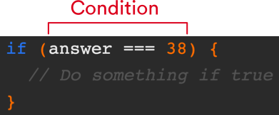
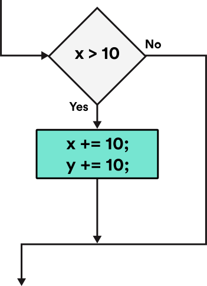
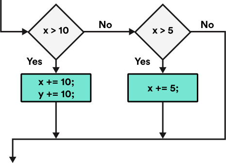

WDI Fundamentals Unit 8
Conditionals
The comparison and logical operators we covered in the last lesson are useful in JS because they help us compare different conditions to one another.
Take a look at this short video that describes how conditional statements tie in with the material we just covered.
Conditions are usually made up of a mathematical statement that uses an operator (the signs that allow us to make the comparison, such as equals, less than, or greater than).
Conditions are statements that make comparisons that evaluate to true or false in order to control the flow of the program.
Take a look:
if (grade >= 80) {
console.log("Congrats! You've passed this class.");
}
Here the condition is the comparison that is within the parentheses:
grade >= 80
How Conditions Are Used
When information is incorrect, JavaScript can help identify the comparison as false.
So if you're filling out a form that requires your birthday, you can't say you were born in the year 2045 because that year hasn't occurred yet.
You also can't say that you were born on December 45th, because that day doesn't exist.
When you try entering information like this, JS will identify that it is wrong by comparing the information you entered against information that has been provided as accurate.

Making comparisons is almost like asking questions about the information the user has entered.
Is the year less than or equal to 2017 and more than or equal to 1900? If the answer to this question is "true," then we know the user has entered a valid year, and that he or she was born somewhere between 1900 and 2017.

Did you notice how we used the term "less than or equal to" to check, or compare, two things? This is how our comparison operators help us make decisions.
Conditional Statements
Now we're going to learn a bit more about conditional statements and how we can use them to control the flow of a program.
We can use a conditional statements to skip over a block of code if it does not pass a boolean expression.
Let's say our condition is 10 > 4.
This is an example of a condition that the interpreter will evaluate as either true or false.
Once we have this type of condition, we can add in our conditional statements to take one path if the condition is true and another if the condition is false.
if (condition) {
// Take this path when the condition is true!
} else {
// Take the other path when the condition is false!
}
if...else statements
Let's start by looking at if...else statements.
As you may have guessed from its name, the first component of the if...else statement is the if statement.
An if statement allows us to check whether or not a condition is true and, if it is, run our code.
The conditional below is an if statement.
An if statement will take in a condition and, if that condition is truthy, run whatever code you specify.

Flow Charts
You're probably already familiar with a common real-world application of the if statement: the flow chart.
A flow chart is a visual diagram that tells us how to behave depending on a certain set of conditions.

If we were to draw a flowchart to describe the following if statement:
if (x > 10) {
x += 10;
y += 10;
}
We might come up with something like this:

As you can see, a person making their way through this diagram would need to make a decision.
Depending on whether or not our condition is truthy, he or she would either enter the block of code or skip over it entirely.
Else If Statements
Adding an else if to our if statement allows us to specify a second condition to test.
However, this second condition will only be tested if the first condition fails.
For example, let's say we want to create a program that will calculate letter grades based on cumulative homework scores for a class:
if (grade >= 90) {
console.log("Student received an A.");
} else if (grade >= 80) {
console.log("Student received a B");
}
Notice how we are now able to check to see if multiple conditions are true.
We can add as many else if statements as we want. You just keep tacking them on.
These statements allow us to add complex logic to our program, which can check for multiple conditions and specify an action for each result, making our program seem more intuitive and user friendly.

Else Statements
At this point, if none of the conditions we check for are true, then nothing will happen.
We need a way to check several conditions and have the ability to move forward if none of these conditions are true — a default, or fallback, course of action.
To specify behavior for this outcome, we can add an else to the end of our statement.
Let's look at an example of an else statement:
if (grade >= 90) {
console.log("Student received an A.");
} else if (grade >= 80) {
console.log("Student received a B.");
} else if (grade >= 70) {
console.log("Student received a C.");
} else {
console.log("Student failed :(");
}
Test Yourself
Consider the following conditional statement:
var temp = 75;
if (temp > 70) {
console.log("It is hot outside!");
} else if (temp > 50) {
console.log("It is warm outside.");
} else {
console.log("Brr! It's freezing out there!");
}
- What will be logged to the console?
- What will be logged to the console if ...
tempis 50?tempis 4?tempis 51?
- Under what circumstances will "Brr! It's freezing out there!" be logged to the console?
Try copying that whole statement into JS Bin and testing out different values for temp. Were your answers correct?
You may need to refresh the page if you cannot see the JS Bin Console.
Note: Assignment vs. Comparison Operator
Within our conditions, we will often need to check to see whether or not two values are equal to one another, and perform an action based on the results.
Example:
if (result === true) {
// Congratulate the user on passing
}
Notice that we used a triple equals instead of a single equals in the condition.
This is important to note, as confusing the assignment operator with the comparison operator is a common mistake for beginners.

Take a look at the following example:
Here, we are not comparing x with the number 3. We're assigning the variable x the value of 3 by using = instead of ===.
if (x = 3) {
console.log("boo");
}
Oops!
If we wanted to see if x is equal to 3, we would use a comparison operator (the triple equals sign):
if (x === 3) {
console.log("boo");
}